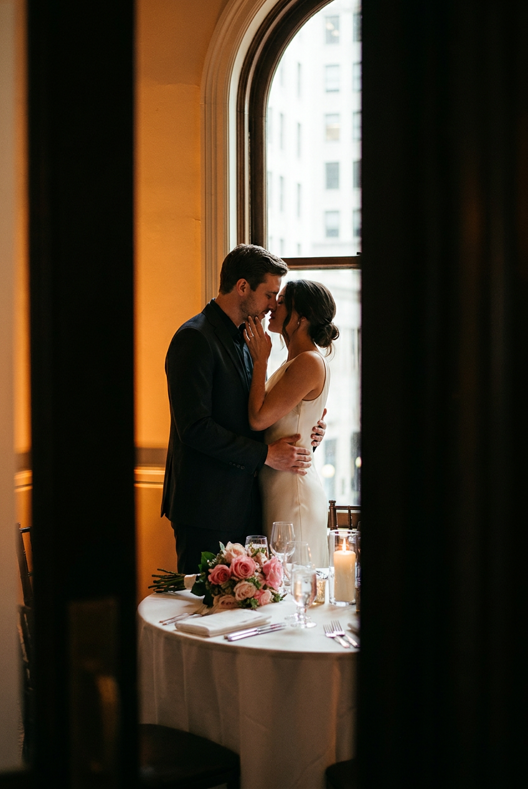
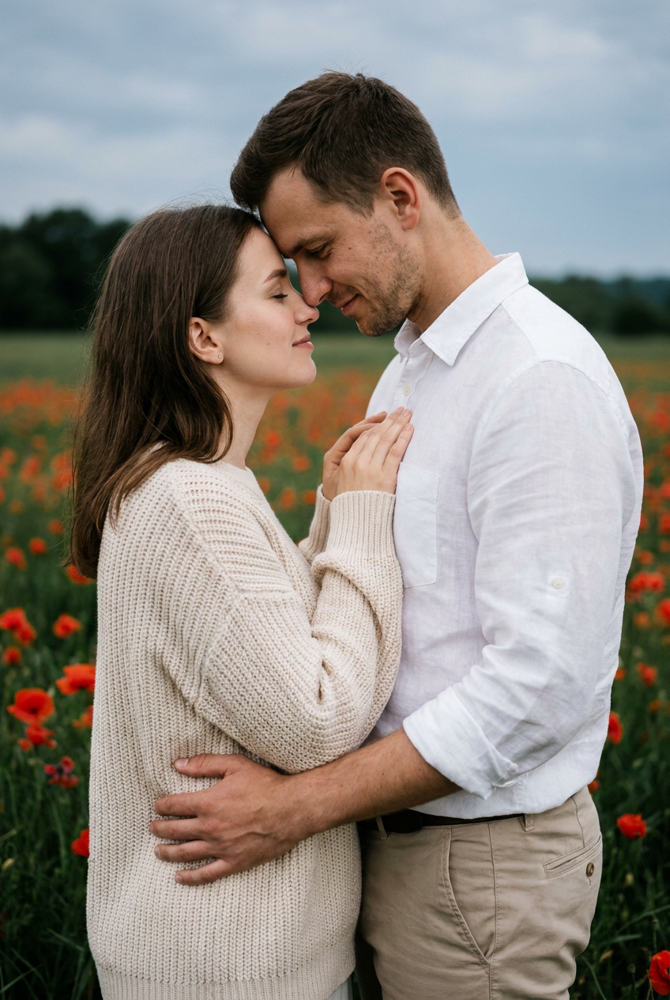
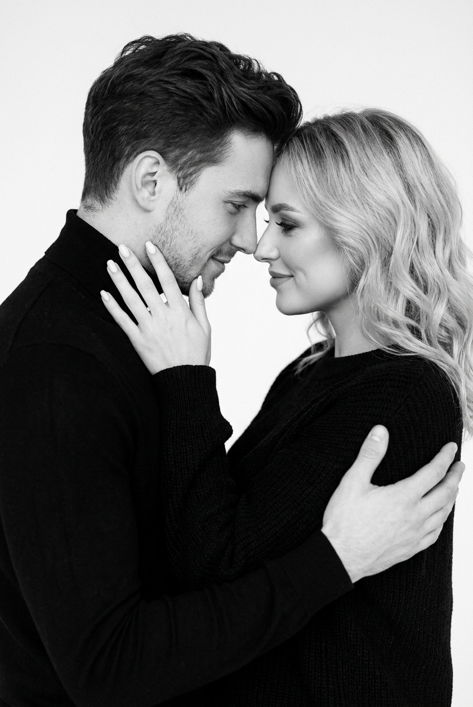
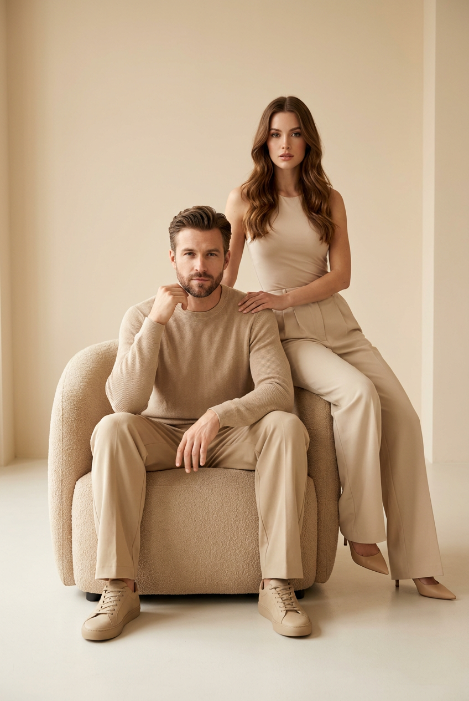
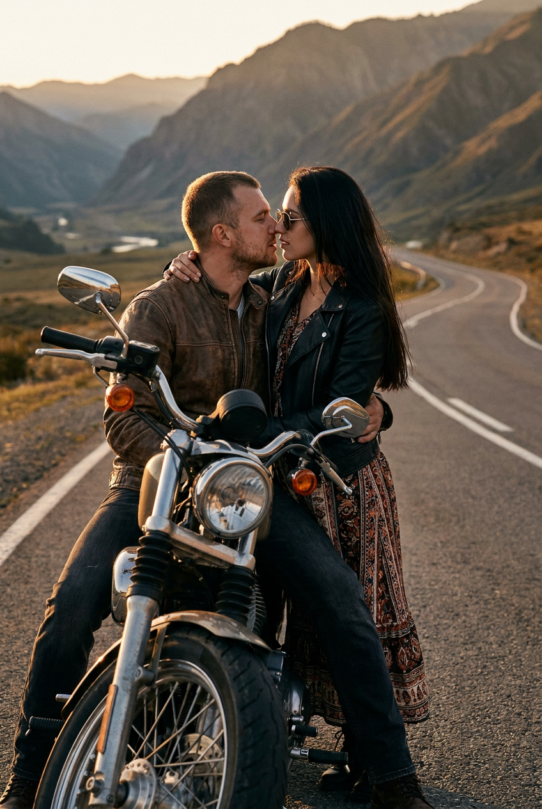
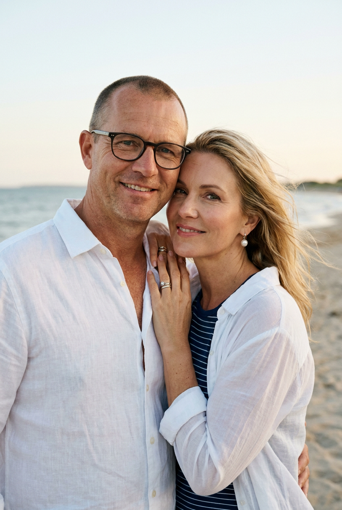
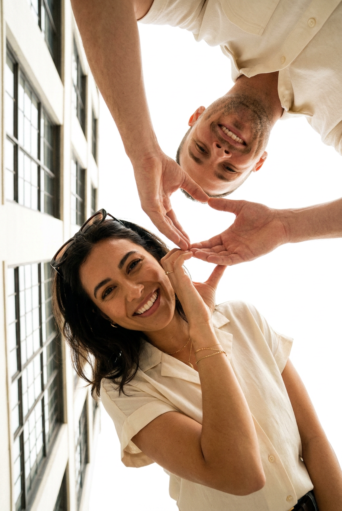
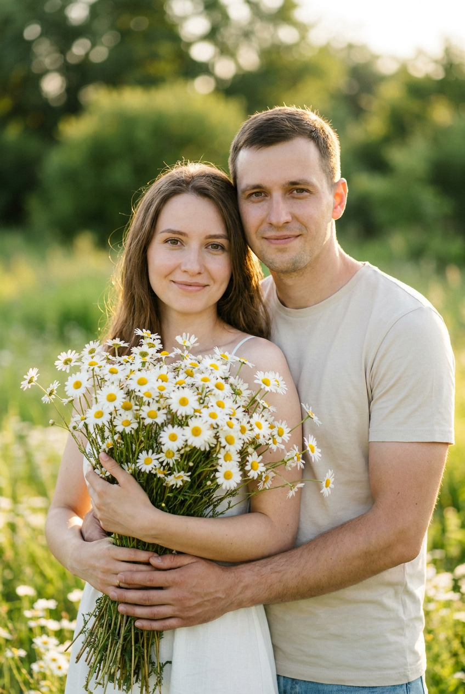
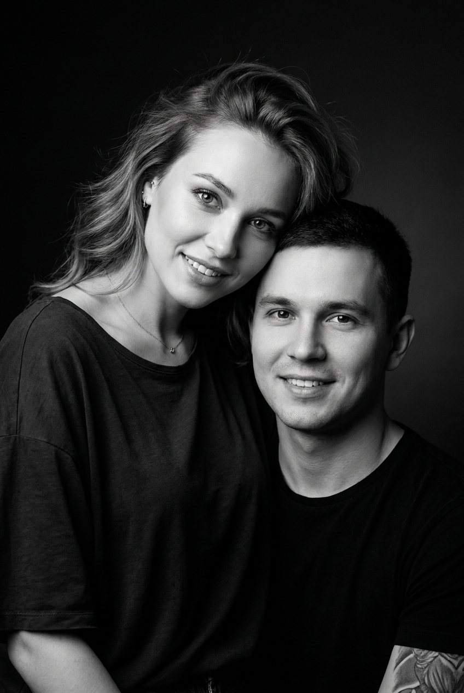
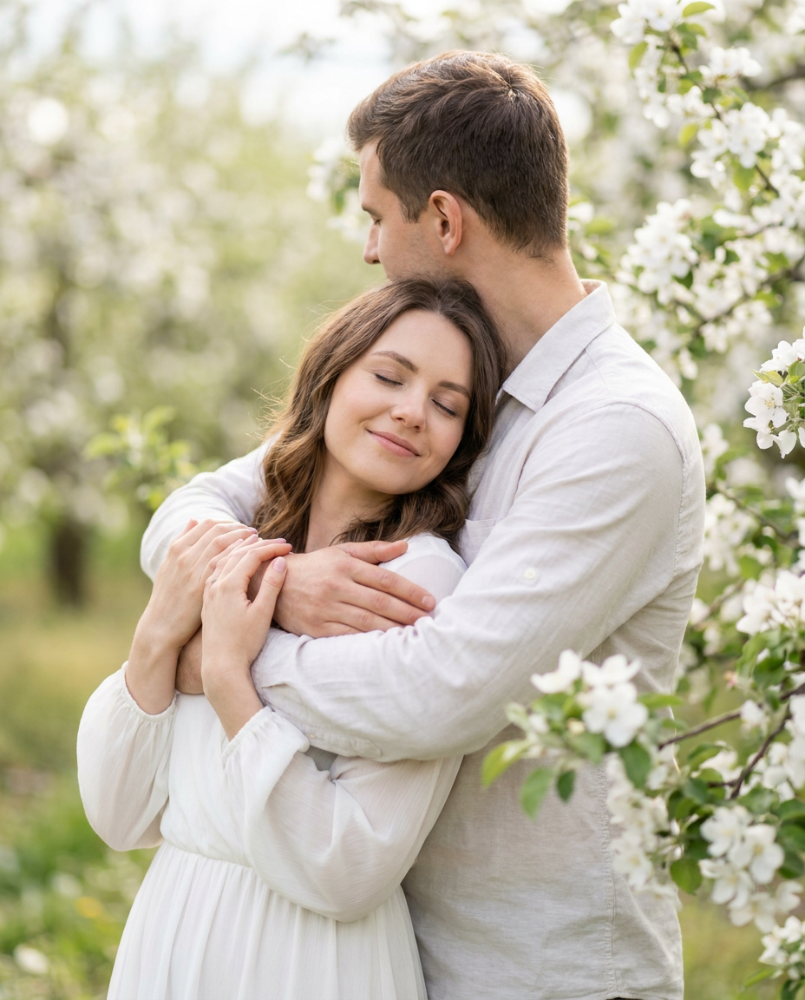

ИИ-фото с мужем: 10 промптов для нейросети

Обычная фотосессия с мужем требует времени, подходящей локации и удачного света. Генерация помогает получить красивый парный кадр даже тогда, когда нет возможности нанять фотографа или выбраться в путешествие.
В подборке — 10 сценариев для романтичных ИИ-фото: от камерного портрета в студии до снимка на мотоцикле, среди маков, ромашек и цветущих яблонь. Подставьте свои референсы и при необходимости уточните одежду, позу и настроение.
Как сгенерировать такое фото: пошагово
Нужен снимок анфас при ровном свете, лицо в кадре целиком, без тёмных очков и головных уборов. Разрешение от 1000 пикселей по короткой стороне. Чем чётче исходник, тем точнее модель повторит черты.
Выберите сценарий ниже и нажмите «Копировать» — текст уйдёт в буфер целиком, вместе с командой сохранения внешности. Эта команда стоит первой строкой и отвечает за то, чтобы на выходе было ваше лицо, а не случайное.
Кнопка «Сгенерировать» рядом с каждым промптом открывает модель в новой вкладке. Nano Banana Pro работает с референсом лица — в отличие от моделей, которые генерируют портрет с нуля и узнаваемость теряют.
Промпт — в поле ввода, портрет — через загрузку референса. Порядок значения не имеет, но без референса команда сохранения внешности работать не будет: модели нечего сохранять.
Для сторис и ленты берите 9:16, для превью и обложек — 4:3. Первый результат редко идеален: если поза или свет ушли не туда, поправьте соответствующую часть промпта и запустите заново. Обычно хватает двух-трёх итераций.
10 промптов для генерации
1. Романтика у арочного окна
Строго сохранить внешность по загруженному референсу: черты лица, пропорции, мимику и текстуру кожи без изменений. Фотореалистичная вертикальная сцена в эстетике luxury fine art и romantic lifestyle. Съемка ведется будто из дверного проема: затемненные стены и край рамы частично закрывают передний план, создавая эффект наблюдения со стороны. В уютной комнате стоит пара напротив стола под высоким арочным окном; за стеклом видно светлое городское здание, слегка пересвеченное мягким дневным светом. Внутри — теплое янтарное освещение, приглушенные стены, легкая виньетка и красивое боке. На столе белая скатерть и сервировка. Камера на уровне глаз или чуть ниже, малая глубина резкости. Взрослый мужчина 25–45 лет с темными волосами и аккуратным внешним видом стоит рядом с женщиной; они близко друг к другу, лица частично скрыты движением и интимной позой. Натуральная кожа, кинематографичный свет, реалистичные пропорции, высокая детализация.
2. Поцелуй в поле маков

Строго сохранить внешность по загруженному референсу: черты лица, пропорции, мимику и текстуру кожи без изменений. Вертикальная фотореалистичная фотография романтичной пары среди поля ярко-красных маков. Композиция построена как в референсе: цветы занимают передний и средний план, между ними видна темно-зеленая трава, дальний фон мягко растворяется в размытии. На горизонте проходит темная линия деревьев, выше — серо-голубое небо пасмурного дня. Свет естественный, рассеянный, без резких теней; настроение спокойное и нежное. Пара стоит близко, поза выглядит живой и непринужденной. Максимально точно передай лица обоих людей по референсам: форму глаз, носа, губ, скул и подбородка, линию волос, оттенок кожи, возраст и естественную мимику. Без пластиковой кожи, лишней ретуши, деформаций и признаков генерации. Натуральная цветопередача, реалистичная фактура цветов, портретная глубина резкости.
3. Черно-белый портрет близости

Строго сохранить внешность по загруженному референсу: черты лица, пропорции, мимику и текстуру кожи без изменений. Черно-белый вертикальный студийный fashion-портрет пары на почти белом чистом фоне, без реквизита и надписей. Мужчина находится слева, женщина справа; они стоят очень близко лицом к лицу, кончики носов почти соприкасаются, виски или лбы слегка касаются друг друга. Взгляды направлены вниз или на партнера, выражения мягкие, с едва заметной романтичной улыбкой. У мужчины темные объемно уложенные волосы, чисто выбритое лицо или легкая естественная щетина, черный свитер либо водолазка с высоким воротником. Его ладонь поднята к щеке женщины, пальцы мягко разведены и не закрывают лицо. У женщины светлые волосы с мягкой волной и пробором около центра, спокойный взгляд и нежная мимика. Контрастный, но мягкий студийный свет, тонкие градации серого, реалистичные руки и кожа, минималистичная editorial-эстетика.
4. Пара в бежевом кресле

Строго сохранить внешность по загруженному референсу: черты лица, пропорции, мимику и текстуру кожи без изменений. Фотореалистичная вертикальная fashion-съемка в светлом нейтральном интерьере с эстетикой luxury editorial. Гладкие стены, мягкие световые градиенты, матовый светлый пол, палитра warm white, sand и beige. В центре стоит одно большое бежевое кресло с подлокотниками. Мужчина сидит слева или по центру, расслабленно опираясь спиной; руки согнуты, одна рука лежит на подлокотнике, другая свободно размещена рядом с корпусом. У него короткие темно-русые или каштановые волосы с аккуратным пробором, короткая ухоженная борода и спокойный уверенный взгляд в камеру или чуть в сторону. На нем однотонный песочный пуловер с мягкой трикотажной фактурой, свободные бежевые брюки классического силуэта и бежевые кроссовки со светлой подошвой. Женщина находится рядом с ним в естественной близкой позе. Чистые премиальные тона, высокая детализация, мягкий рассеянный свет, отсутствие визуального шума.
5. Поцелуй на горной дороге

Строго сохранить внешность по загруженному референсу: черты лица, пропорции, мимику и текстуру кожи без изменений. Вертикальная фотореалистичная фотография романтичной пары на пустой асфальтовой дороге среди гор. Мужчина и женщина стоят или сидят в объятиях на классическом мотоцикле в стиле cruiser или naked bike; переднее колесо и крупная фара хорошо видны в нижней части кадра. Они почти касаются губами или целуются, поза очень близкая и нежная. Мужчина одет в коричневую кожаную куртку, темные джинсы и ботинки, у него короткая стрижка и легкая щетина. На женщине черная кожаная куртка, длинное струящееся платье с этническим узором, длинные темные волосы и солнцезащитные очки. На фоне — горы, долина и свободная дорога, мягкий драматичный свет заката, теплая кинематографичная атмосфера. Сохрани возраст и узнаваемость мужчины по референсу. Editorial couple photography, объектив 85 мм, малая глубина резкости, размытый фон, natural skin texture, ultra realistic, high detail, cinematic color grading.
6. Теплый портрет у моря

Строго сохранить внешность по загруженному референсу: черты лица, пропорции, мимику и текстуру кожи без изменений. Фотореалистичный вертикальный outdoor-портрет пары на морском берегу, кадр по грудь или по плечи. За людьми видны песок, вода и далекая линия горизонта, морской пейзаж уходит в мягкое боке. Съемка на закате или днем при теплом рассеянном свете; небо светлое, слегка выцветшее, у горизонта тонкая дымка. Цветокоррекция пастельная и теплая, кожа естественная, настроение легкое и летнее. Мужчина стоит слева и немного ближе к камере: ему 45–65 лет, кожа светлая, голова коротко острижена или почти лысая, на лице темные очки, выражение доброжелательное, спокойный взгляд и улыбка. На нем белая льняная рубашка с открытым воротом, расстегнутыми верхними пуговицами и слегка мятой дорогой фактурой. Женщина справа, чуть ближе к центру, светлокожая, со светлыми волосами, отдельные пряди развевает ветер. Натуральные лица, мягкий фокус, реалистичная ткань и морская атмосфера.
7. Сердце руками снизу

Строго сохранить внешность по загруженному референсу: черты лица, пропорции, мимику и текстуру кожи без изменений. Фотореалистичная вертикальная fashion-съемка пары с необычного очень низкого ракурса, камера направлена снизу вверх. Большую часть фона занимает светлое небо, слева виден фрагмент здания с ровными окнами. Перспектива слегка перевернута, будто кадр снят наизнанку, поэтому лица оказываются под необычным углом и сцена выглядит игривой. Женщина находится ближе к камере и ниже в композиции: у нее темные волосы, темные солнечные очки на голове или глазах, радостная улыбка и светлая кремовая блузка с короткими свободными рукавами. Она поднимает руки и вместе с руками мужчины образует сердце над собой; на запястье тонкие украшения или часы. Мужчина расположен выше и дальше, наклоняется к ней, помогает сложить жест и выглядит нежно. Свет высокий, воздушный, детали рук реалистичные, настроение легкое и влюбленное, editorial couple photography.
8. Объятие с букетом ромашек

Строго сохранить внешность по загруженному референсу: черты лица, пропорции, мимику и текстуру кожи без изменений. Вертикальный кинематографичный портрет пары в зеленом поле ромашек, камера находится на уровне глаз. Женщина стоит слева или в центре и держит перед собой большой букет белых ромашек; связка расположена на уровне груди и немного смещена влево, к центру кадра. Лепестки и желтые серединки должны быть четкими, снизу видны стебли и свежая зелень. Мужчина стоит справа, чуть сзади, и обнимает женщину обеими руками: его руки естественно проходят по ее талии и корпусу, часть рук видна рядом с букетом, без лишних пальцев и неестественных изгибов. Оба смотрят в камеру или совсем рядом с ней, выражения спокойные, с легкой улыбкой. Сохрани реальные лица, индивидуальные пропорции и узнаваемость обоих людей по референсам. Мягкий дневной свет, натуральная кожа, малая глубина резкости, фон из растительности размытый, букет — главный объект изображения.
9. Черно-белая улыбка крупным планом

Строго сохранить внешность по загруженному референсу: черты лица, пропорции, мимику и текстуру кожи без изменений. Черно-белый low-key студийный портрет пары в вертикальном формате, плотный кадр по грудь или по плечи. Лица занимают большую часть изображения. Мужчина находится ниже или в центре, смотрит прямо в камеру и улыбается открытой улыбкой; у него короткие темные волосы, ровные черты лица и темная футболка, на плече или рукаве заметен фрагмент татуировки. Женщина расположена сверху и немного ближе к объективу, наклоняется к мужчине и лежит головой рядом с его головой, создавая ощущение дружеской и романтичной близости. У нее светлая кожа, выразительные глаза, естественный макияж, легкая улыбка с открытыми зубами и слегка приподнятая бровь. Волнистые волосы зачесаны набок и сохраняют естественный объем; видны аккуратные украшения и темный свободный верх с широким вырезом или мягкой трикотажной фактурой. Головы слегка соприкасаются, камера напротив лиц с небольшим наклоном. Драматичный мягкий свет, глубокие тени, чистая фактура кожи.
10. Объятие в яблоневом саду

Строго сохранить внешность по загруженному референсу: черты лица, пропорции, мимику и текстуру кожи без изменений. Фотореалистичная вертикальная фотография пары среди цветущих яблонь. Люди стоят очень близко и выглядят естественно: мужчина обнимает женщину сзади или сбоку, одной рукой удерживает ее за талию или плечо, второй касается ее рук или спины. Женщина слегка прижимается к нему, ее глаза закрыты, на лице спокойное счастливое выражение и едва заметная улыбка; лбы или виски могут мягко соприкасаться. На женщине легкое белое воздушное платье свободного минималистичного кроя, романтичное и невесомое. Мужчина одет сдержанно, в гармоничной светлой или натуральной гамме, его поза расслабленная и заботливая. Сохрани точную узнаваемость лиц, форму глаз, бровей, носа, губ, скул, пропорции и индивидуальные черты по загруженному референсу. Вокруг — ветви яблони с бело-розовыми цветами, мягкий естественный свет, нежная love story и engagement editorial эстетика, натуральная кожа, реалистичные руки, умеренное боке.
Что важно учесть в этом стиле
Для парного ИИ-фото лучше использовать по одному четкому референсу на каждого человека. Лица должны быть хорошо освещены, без темных очков, сильного поворота головы и перекрывающих волосы аксессуаров. Если генератор поддерживает несколько изображений, загрузите их отдельно и подпишите, кто где находится в кадре.
Сначала задайте сцену и композицию, затем опишите внешность, одежду и эмоции. Для реалистичной картинки полезно указать вертикальный формат 4:5 или 2:3, объектив 50–85 мм, мягкий свет и естественную текстуру кожи. Сложные жесты, объятия и букеты иногда требуют 3–7 попыток.
Идеи для вариаций
- Замените поле маков на лавандовую ферму или сухой злаковый луг.
- Попросите вечерний свет вместо пасмурного дня и добавьте легкий ветер в волосах.
- Сделайте серию в одном стиле: портрет, кадр в полный рост и снимок крупным планом.
- Для зимнего варианта добавьте заснеженный лес, шерстяные пальто и теплые шарфы.
- В сцене с букетом замените ромашки на пионы, тюльпаны или полевые васильки.
Как собрать свой промпт
Начните с формата и типа съемки: вертикальный портрет, editorial или семейная фотография. После этого укажите место, время суток, источник света и положение камеры. Фразы вроде кадр по грудь, камера на уровне глаз или объектив 85 мм помогают закрепить композицию.
Затем опишите каждого человека отдельно: возраст, волосы, одежду, позу и направление взгляда. В финале добавьте ограничения: пять пальцев на каждой руке, естественные пропорции, без лишних людей, текста и пластикового лица. Для сохранения сходства уточните, что референс используется только для лица, а поза и одежда задаются текстом.
Ошибки, из-за которых кадр не получается
- Слишком много деталей сразу. Если в одном абзаце смешаны три локации и несколько поз, модель может объединить их в одну сцену.
- Неясное расположение людей. Указывайте, кто слева, кто справа, кто ближе к камере и чьи руки видны.
- Сложные кисти без ограничений. Для сердец, букетов и объятий отдельно прописывайте естественное положение пальцев.
- Плохие референсы. Размытые селфи, сильные фильтры и лица в профиль снижают точность сходства.
- Противоречивый свет. Не сочетайте жесткий полуденный контраст с мягким пасмурным освещением в одном промпте.
Частые вопросы
Как сделать такое ИИ-фото бесплатно?
Попробовать можно в Kandinsky и Шедевруме, а также в Krea AI и Arena.ai, если в вашем регионе доступны генерация и загрузка референсов. Бесплатные режимы часто ограничивают число попыток, разрешение, скорость или точность работы с лицами. Референс пары поддерживается не во всех сценариях: иногда сервис меняет черты, путает людей или плохо рисует руки. Для первого результата используйте простой портретный промпт, а сложные объятия и жесты дорабатывайте несколькими генерациями.
Как сохранить сходство с мужем на ИИ-фото?
Загрузите четкий портрет без сильной ретуши и прямо укажите, какие черты нельзя менять. Не перегружайте описание альтернативными прическами, возрастом и эмоциями. Если сервис позволяет задать силу референса, начните со среднего значения: слишком сильное влияние может сохранить лицо, но испортить позу и одежду.
Почему нейросеть искажает руки в объятиях?
Переплетенные руки, пальцы у лица и букеты относятся к сложным зонам. Опишите положение каждой руки отдельно: одна лежит на талии, вторая касается плеча, пальцы не закрывают лицо. Если результат все равно неудачный, сгенерируйте сцену без букета, а затем исправьте детали редактором.
Какой формат выбрать для публикации?
Для сторис и вертикальных постов подойдет соотношение 4:5 или 2:3, а для обложки лучше заранее оставить свободное место сверху. Попросите разрешение от 1024 пикселей по короткой стороне, затем увеличьте изображение отдельным апскейлером. Перед публикацией проверьте глаза, зубы, пальцы, края одежды и мелкие детали фона.